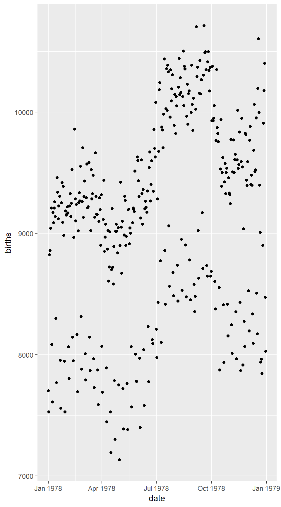

Introduction to R and Statistics
0.1 Getting Started With RStudio
You should change your password. Here’s how.
- From the Tools menu, select Shell
- Type
yppasswd - You will be prompted for your old password, then your new password twice.
- If you give a sufficiently strong new password (at least six letters, at least one capital, etc.) you will receive notice that your password has been reset. If there was a problem, you will see a message about it and can try again.
- Once you have reset your password, click on Close to close the shell and get back to RStudio.
RStudio
RStudio provides an integrated development environment (IDE) for R that makes R much easier to use. It is freely available from rstudio.com in versions for Macintosh, PC, or Linux. RStudio server provides access to RStudio via a web browser. We will generally assume that RStudio is being used throughout. Although most things can be done without RStudio as well, our descriptions may apply only to RStudio .
Loading packages
R is divided up into packages. A few of these are loaded every time you run R but most have to be selected.
This way you only have as much of R as you need.
In the Packages tab in RStudio , check the boxes next to the following packages to load them:
- Lock5withR (data sets and utilities to accompany the text)
- mosaic (a package from Project MOSAIC)
- mosaicData (Project MOSAIC data sets)
You can also load these packages with the following commands:
require(Lock5withR)
require(mosaic)
require(mosaicData)We will always assume that these three packages have been loaded.
Figure 1: Welcome to RStudio
Using R as a calculator
Notice that RStudio divides its world into four panels. Several of the panels are further subdivided into multiple tabs. The console panel is where we type commands that R will execute.
R can be used as a calculator. Try typing the following commands in the console panel.
5 + 3## [1] 815.3 * 23.4## [1] 358.02sqrt(16)## [1] 4You can save values to named variables for later reuse
product = 15.3 * 23.4 # save result
product # show the result## [1] 358.02product <- 15.3 * 23.4 # <- is assignment operator, same as =
product ## [1] 358.0215.3 * 23.4 -> newproduct # -> assigns to the right
newproduct## [1] 358.02.5 * product # half of the product## [1] 179.01log(product) # (natural) log of the product## [1] 5.880589log10(product) # base 10 log of the product## [1] 2.553907log(product, base = 2) # base 2 log of the product## [1] 8.483896The semi-colon can be used to place multiple commands on one line. One frequent use of this is to save and print a value all in one go:
15.3 * 23.4 -> product; product # save result and show it## [1] 358.020.2 Getting Help in RStudio
The RStudio help system
There are several ways to get RStudio to help you when you forget something. Most objects in packages have help files that you can access by typing something like:
?bargraph
?histogram
?HELPrctYou can search the help system using
help.search('Grand Rapids') # Does R know anything about Grand Rapids?This can be useful if you don’t know the name of the function or data set you are looking for.
History
If you know you have done something before, but can’t remember how, you can search your history. The history tab shows a list of recently executed commands. There is also a search bar to help you find things from longer ago.
Error messages
When things go wrong, R tries to help you out by providing an error message. If you can’t make sense of the message, you can try copying and pasting your command and the error message and sending to me in an email. One common error message is illustrated below.
fred <- 23
frd## Error in eval(expr, envir, enclos): object 'frd' not foundThe object frd is not found because it was mistyped. It should have been fred. If you see an ``object not found’’ message, check your typing and check to make sure that the necessary packages have been loaded.
0.3 Four Things to Know About R
Computers are great for doing complicated computations quickly, but you have to speak to them on their terms. Here are few things that will help you communicate with R
R is case-sensitive
If you mis-capitalize something in R it won’t do what you want.
Functions in R use the following syntax:
functionname( argument1, argument2, ... )The arguments are always surrounded by (round) parentheses and separated by commas.
Some functions (like
data()) have no required arguments, but you still need the parentheses.If you type a function name without the parentheses, you will see the code for that function – which probably isn’t what you want at this point.
TAB completion and arrows can improve typing speed and accuracy.
If you begin a command and hit the TAB key, R will show you a list of possible ways to complete the command. If you hit TAB after the opening parenthesis of a function, it will show you the list of arguments it expects. The up and down arrows can be used to retrieve past commands.
If you get into some sort of mess typing (usually indicated by extra ‘\(+\)’ signs along the left edge), you can hit the escape key to get back to a clean prompt.
0.4 Data in R
Data in Packages
Most often, data sets in R are stored in a structure called a data frame. There are a number of data sets built into R and many more that come in various add on packages. The Lock5withR package, for example, contains all the data sets from our text book. In the book, data set names are printed in bold text.
You can see a list of them using
data(package = "Lock5withR")You can find a longer list of all data sets available in any loaded package using
data()The HELPrct data set
The HELPrct data frame from the mosaicData package contains data from the
Health Evaluation and Linkage to Primary Care randomized clinical trial.
You can find out more about the study and the data in this data frame by typing
?HELPrctAmong other things, this will tell us something about the subjects in this study:
Eligible subjects were adults, who spoke Spanish or English, reported alcohol, heroin or cocaine as their first or second drug of choice, resided in proximity to the primary care clinic to which they would be referred or were homeless. Patients with established primary care relationships they planned to continue, significant dementia, specific plans to leave the Boston area that would prevent research participation, failure to provide contact information for tracking purposes, or pregnancy were excluded.
Subjects were interviewed at baseline during their detoxification stay and follow-up interviews were undertaken every 6 months for 2 years.
It is often handy to look at the first few rows of a data frame. It will show you the names of the variables and the kind of data in them:
head(HELPrct)That’s plenty of variables to get us started with exploration of data.
Using your own data
From Excel or Google to R
So far we have been using data that lives in R packages. This has allowed us to focus on things like how to make plots and create numerical summaries without worrying too much about the data themselves. But if you are going to do any of your own statistical analyses, then you will need to import your own data into R and have some tools for manipulating the data once it is there.
Excel or Google spreadsheets are reasonable tools for entering (small) data sets by hand and doing basic data tidying (organizing) and cleaning (correcting errors). This section describes how to get data from a spreadsheet into R
While you are still in the spreadsheet
If you are creating your own data in a spreadsheet with the intent of bringing into R (or some other statistical package) for analysis, it is important that you design your spreadsheet appropriately. For most data sets this will mean
The first row should contain variables names.
These should be names that will work well in R This usually means they will be relatively short and avoid spaces and punctuation.
Each additional row corresponds to a case/observational unit.
Each column corresponds to a variable.
There is nothing else in the spreadsheet.
Do not include notes to yourself, plots, numerical summaries, etc. These things can be kept in a separate worksheet, another file, your lab notebook, just not in the worksheet you are going to export.
Exporting to csv
The comma separated values (csv) format has become a standard way of transferring data between programs. Both Google and Excel can export to this format, and R can import from this format. Once your dataare ready to go, export them to csv. Give the file a good name, and remember where you have put it.
Uploading the data (RStudio server only)
To get the data from your computer onto the server, you need to upload the data. (You can skip this step if you are working with a local copy of RStudio ) Uploading transfers a copy of your data from your computer onto the server (the “cloud”). This is like uploading pictures to Facebook so you can later use them in posts or as a cover photo or tag your friends or whatever else once the photo is on Facebook.
To upload the data, go to the Files tab and click on Upload:
A window will pop up prompting you to browse to the file’s location on your computer. Choose the file and it will upload to the server. You should see it appear in your file menu.
Importing the data into R
Now that the file is on the server, you can import it into R This takes place in the Environment tab. Once there, choose Import Dataset and then From Text File….
The instructions are pretty clear from there, but here are some things to watch for:
- The default name for the data set is taken from the file name. If you used a very long file name, you will probably want to shorten this down. (But don’t call it
Dataor something too generic either.) If the data are from the asters you have been tagging, perhaps call itAsters. If you are working with multiple data sets that deal with asters, add a bit more detail, perhapsAsters01or some such thing. - Be sure to select to use your first line as variable names (Heading = Yes).
The data set should now be ready for use in R
A shortcut for Google Spreadsheets
The new googlesheets package provides a number of utilities
for reading and writing between R and Google sheets. At the time
of this writing, it is in active development and available via github.
Using R commands to read a data file
Even if you primarily use the RStudio interface to import data, it is good to know about the command line methods since these are required to import data into scripts, RMarkdown, and Rnw files. CSV files (and a few other types of files as well) can be read with
someData <- read.file("file.csv")This can be used to read data directly from a URL as well. For example, here is some data from the US Census Bureau:
Many web sites provide data in csv format.
Here some examples:
- http://www.census.gov/ (Census Bureau data)
- http://www.ncdc.noaa.gov/data-access (NOAA Weather and climate data)
- http://www.gapminder.org/data/ (Gapminder data)
- http://introcs.cs.princeton.edu/java/data/ has a number of data sets, some in csv format, collected from other places on the internet.
- http://www.exploredata.net/Downloads has data from WHO, a genome expression study, and a microbiome study.
But be aware that some of these files might need to be cleaned up a bit before they are usable for statistics. Also, some internet files are very large and may take a while to download. Many sites will give an indication of the size of the data set so you know what you are in for. The better sites will include links to a code book (a description of all the variables, units used, how and when the data were collected, and any other information relevant to interpreting the data). Such a document is available for the population data loaded above. You can find it at http://www.census.gov/popest/data/national/totals/2012/files/NST-EST2012-alldata.pdf
Missing Data
The na.strings argument can be used to specify codes for missing values. The following can be useful, for example:
someData <- read.file('file.csv', na.strings = '.')
someData <- read.file('file.csv', na.strings = '-')because SAS uses a period (.) to code missing data, and some csv exporters use `-’. By default R reads these as string data, which forces the entire variable to be of character type instead of numeric.
Importing Other Kinds of Data
Many R packages provide the ability to load data from special data files. If you have data in some other format, there may well be
a package that makes it easy to load your data into R. For example, several packages (including readxl) provide the ability to read data
directly from Excel files without first saving the data as a csv file. If you make frequent use of Excel spreadsheets, you may find
this convenient. rdrop2 provides the ability to manage data with Dropbox. And the foreign package provides functions
to read data from a wide range of other statistical packages.
But since these typically all know how to read and write csv files,
learning a workflow that goes through CSV is a broadly applicable skill.
0.5 The Most Important Template
Most of what we will do in this chapter makes use of a single R template:
\[ \fbox{`________`} \; ( \; \fbox{`________`} \; \sim \; \fbox{`________`} \;, \; data = \fbox{`________`} \; ) \]
It is useful if we name the slots in this template:
\[ \fbox{goal} \; ( \;\fbox{y} \;\sim \;\fbox{x} \;, \; \texttt{data}=\fbox{mydata} \; ) \]
Actually, there are some variations on this template:
### Simpler version -- for just one variable
goal( ~ x, data = mydata )
### Fancier version:
goal( y ~ x | z , data = mydata )
### Unified version:
goal( formula , data = mydata )To use the template (we’ll call it the formula template because there is always a formula involved), you just need to know what goes in each slot. This can be determined by asking yourself two questions:
- What do you want R to do?
- this determines what function to use (goal).
- What must R know to do that?
- this determines the inputs to the function
- for describing data, must must identify which data frame and which variable(s).
Let’s try an example. Suppose we want to make this plot 
What is our goal?
Our goal is to make a scatter plot. The function that does this is called
gf_point(). That takes care of the first slot.What does R need to know to do this?
It needs to know what data set to use, and which varialbes to use on the x and y axes. These data are in the Births78 data set in the
mosaicDatapackage. Let’s take a quick look at the data:
require(mosaicData) # load the package that contains our data set
head(Births78)## date births wday year month day_of_year day_of_month day_of_week
## 1 1978-01-01 7701 Sun 1978 1 1 1 1
## 2 1978-01-02 7527 Mon 1978 1 2 2 2
## 3 1978-01-03 8825 Tue 1978 1 3 3 3
## 4 1978-01-04 8859 Wed 1978 1 4 4 4
## 5 1978-01-05 9043 Thu 1978 1 5 5 5
## 6 1978-01-06 9208 Fri 1978 1 6 6 6We want the date on the x-axis and the number of births on the y axis, so the full command is
xyplot(births ~ date, data = Births78)This same template can be used for a wide variety of graphical and
numerical summaries. For example, to compute the mean number of births, we can
change xyplot() to mean() and provide births
but not date:
mean( ~ births, data = Births78)## [1] 9132.162Notice that when there is only one variable, it goes on the right side of the wiggle (~).
We’ll see more examples of this template as we go along.
0.6 Manipulating your data
Creating a subset
The filter() command can be used to create subsets. The population
data set we downloaded has population for states and various other regions. If we
just want the states, we can select the items where the State variable is
greater than 0. (Notice the double equals for testing equality.)
That two states too many. We can scan the list to see what else is in there.
The two extras are Washington, DC and Peurto Rico.
Choosing specific columns
filter() chooses rows from a data frame. select() selects
columns. This can be handy if you have a data set with many more variables than you are interested in. Let’s pick just a handful from the Population data
set.
Dropping Variables
Sometimes it is easier to think about dropping variables.
We can use select() for this as well:
iris2 <- select(iris, - Sepal.Width, - Sepal.Length) # the minus sign means drop
head(iris2, 3)## Petal.Length Petal.Width Species
## 1 1.4 0.2 setosa
## 2 1.4 0.2 setosa
## 3 1.3 0.2 setosaCreating new variables
We can add a new variable to data set using mutate():
–>
Generally, it is a good idea to keep raw data (like Sepal.Length and Sepal.Width in your data file, but let R do the computation of derived variables for you. Among other advantages, if you ever fix an error in a Sepal.Length measurement, you don’t have to worry about remembering to also recompute the ratio. Futhermore, your R code documents how the derived value was computed.
Saving Data
write.csv() can be used to save data from R into csv formatted files. This can be useful for exporting to some other program.
Data can also be saved in native R format. Saving data sets (and other R objects) using save() has some advantages over other file formats:
- Complete information about the objects is saved, including attributes.
- Data saved this way takes less space and loads much more quickly.
- Multiple objects can be saved to and loaded from a single file.
The downside is that these files are only readable in R
For more on importing and exporting data, especially from other formats, see the R Data Import/Export manual available on CRAN.
Merging datasets
The fusion1 data frame in the fastR package contains genotype information for a SNP (single nucleotide polymorphism) in the gene TCF7L2. The pheno data frame contains phenotypes (including type 2 diabetes case/control status) for an intersecting set of individuals. We can merge these together to explore the association between genotypes and phenotypes using merge().
head(fusion1, 3)## id marker markerID allele1 allele2 genotype Adose Cdose Gdose
## 1 9735 RS12255372 1 3 3 GG 0 0 2
## 2 10158 RS12255372 1 3 3 GG 0 0 2
## 3 9380 RS12255372 1 3 4 GT 0 0 1
## Tdose
## 1 0
## 2 0
## 3 1head(pheno, 3)## id t2d bmi sex age smoker chol waist weight height
## 1 1002 case 32.85994 F 70.76438 former 4.57 112.0 85.6 161.4
## 2 1009 case 27.39085 F 53.91896 never 7.32 93.5 77.4 168.1
## 3 1012 control 30.47048 M 53.86161 former 5.02 104.0 94.6 176.2
## whr sbp dbp
## 1 0.9867841 135 77
## 2 0.9396985 158 88
## 3 0.9327354 143 89# merge fusion1 and pheno keeping only id's that are in both
fusion1m <- merge(fusion1, pheno, by.x = 'id', by.y = 'id', all.x = FALSE, all.y = FALSE)
head(fusion1m, 3)## id marker markerID allele1 allele2 genotype Adose Cdose Gdose
## 1 1002 RS12255372 1 3 3 GG 0 0 2
## 2 1009 RS12255372 1 3 3 GG 0 0 2
## 3 1012 RS12255372 1 3 3 GG 0 0 2
## Tdose t2d bmi sex age smoker chol waist weight height
## 1 0 case 32.85994 F 70.76438 former 4.57 112.0 85.6 161.4
## 2 0 case 27.39085 F 53.91896 never 7.32 93.5 77.4 168.1
## 3 0 control 30.47048 M 53.86161 former 5.02 104.0 94.6 176.2
## whr sbp dbp
## 1 0.9867841 135 77
## 2 0.9396985 158 88
## 3 0.9327354 143 89In this case, since the values are the same for each data frame, we could collapse by.x and by.y to by and collapse all.x and all.y to all. The first of these specifies which column(s) to use to identify matching cases. The second indicates whether cases in one data frame that do not appear in the other should be kept (TRUE) or dropped (filling in NA as needed) or dropped from the merged data frame.
Now we are ready to begin our analysis.
tally(~t2d + genotype, fusion1m)## genotype
## t2d GG GT TT
## case 737 375 48
## control 835 309 270.7 Using R Markdown
Although you can export plots from RStudio for use in other applications, there is another way of preparing documents that has many advantages.
RStudio provides several ways to create documents that include text, R code, R output, graphics, even mathematical notation all in one document. The simplest of these is R Markdown.
To create a new R Markdown document, go to “File”, “New”, then “R Markdown”:
When you do this, a file editing pane will open with a template inserted. If you click on Knit HTML", \RStudio\ will turn this into an HTML file and display it for you. Give it a try. You will be asked to name your file if you haven't already done so. If you are using the \RStudio\ server in a browser, then your file will live on the server (in the cloud’’) rather than on your computer.
If you look at the template file you will see that the file has two kinds of sections. Some of this file is just normal text (with some extra symbols to make things bold, add in headings, etc.) You can get a list of all of these mark up options by selecting the ``Mardown Quick Reference" in the question mark menu.
The second type of section is an R code chunk. These are colored differently to make them easier to see. You can insert a new code chunk by selecting “Insert Chunk” from the “Chunks” menu:
(You can also type {r}! to begin and! to end the code chunk if you would rather type.) You can put any R code in these code chunks and the results (text output or graphics) as well as the R code will be displayed in your HTML file.
There are options to do things like (a) run R code without displaying it, (b) run R code without
displaying the output, (c) controling size of plots, etc., etc.
But for starting out, this is really all you need to know.
R Markdown files must be self-contained
R Markdown files do not have access to things you have done in your console. (This is good, else your document would change based on things not in the file.) This means that you must explicitly load data, and require packages in the R Markdown file in order to use them. In this class, this means that most of your R Markdown files will have a chunk near the beginning that includes
require(mosaic) # load the mosaic package
require(Lock5withR) # get data sets from the bookThe mosaic package provides some templates that are available if you choose “from template” when creating an RMarkdown file in RStudio .
Among other things, this will insert the code required to load the mosaic package, change some default settings, and include a reminder to
load any additional packages you will be using.
Output formats
RStudio makes it easy to generate HTML, PDF, or Word documents from your RMarkdown. Just remember that if you edit any of these files after you generate them
with RMarkdown, then you will need to redo those edits if you ever go back and change the RMarkdown file, but if you change the RMarkdown file, one click will
generate the new HTML, PDF, or Word document. (There are even ways to get it to generate all three in one go;
see the render() function in the rmarkdown package.) So it is best to keep you editing to the RMarkdown document as much as possible.
0.8 Statistics: Answering Questions With Data
This is a course primarily about statistics, but what exactly is statistics? In other words, what is this course about? 1
Here are some definitions of statistics from other people:
a collection of procedures and principles for gaining information in order to make decisions when faced with uncertainty (J. Utts @Utts:2005:SeeingThroughStats),
a way of taming uncertainty, of turning raw data into arguments that can resolve profound questions (T. Amabile @AgainstAllOdds:video),
the science of drawing conclusions from data with the aid of the mathematics of probability (S. Garfunkel @ForAllPracticalPurposes:video),
the explanation of variation in the context of what remains unexplained (D. Kaplan @kaplan-modeling),
the mathematics of the collection, organization, and interpretation of numerical data, especially the analysis of a population’s characteristics by inference from sampling (American Heritage Dictionary @AmHerDictionary:1982).
Here’s a simpler definition:
Statistics is the science of answering questions with data.This definition gets at two important elements of the longer definitions above:
Data – the raw material
data Data are the raw material for doing statistics. We will learn more about different types of data, how to collect data, and how to summarize data as we go along.
Information – the goal
The goal of doing statistics is to gain some information or to make a decision – that is, to answer some question.
Statistics is useful because it helps us answer questions like the following: 2
- Which of two treatment plans leads to the best clinical outcomes?
- Are men or women more successful at quitting smoking? And does it matter which smoking cessation program they use?
- Is my cereal company complying with regulations about the amount of cereal in its cereal boxes? In this sense, statistics is a science – a method for obtaining new knowledge. Our simple definition is light on describing the context in which this takes place. So let’s add two more important aspects of statistics.
Uncertainty – the context
randomness The tricky thing about statistics is the uncertainty involved. If we measure one box of cereal, how do we know that all the others are similarly filled? If every box of cereal were identical and every measurement perfectly exact, then one measurement would suffice. But the boxes may differ from one another, and even if we measure the same box multiple times, we may get different answers to the question How much cereal is in the box?
So we need to answer questions like How many boxes should we measure? and How many times should we measure each box? Even so, there is no answer to these questions that will give us absolute certainty. So we need to answer questions like How sure do we need to be?
Probability – the tool
In order to answer a question like How sure do we need to be?, we need some way of measuring our level of certainty. This is where mathematics enters into statistics. Probability is the area of mathematics that deals with reasoning about uncertainty.
0.9 A First Example: The Lady Tasting Tea
There is a famous story about a lady who claimed that tea with milk tasted different depending on whether the milk was added to the tea or the tea added to the milk. The story is famous because of the setting in which she made this claim. She was attending a party in Cambridge, England, in the \(1920\)s. Also in attendance were a number of university dons and their wives. The scientists in attendance scoffed at the woman and her claim. What, after all, could be the difference?
Fisher, R. A. All the scientists but one, that is. Rather than simply dismiss the woman’s claim, he proposed that they decide how one should test the claim. The tenor of the conversation changed at this suggestion, and the scientists began to discuss how the claim should be tested. Within a few minutes cups of tea with milk had been prepared and presented to the woman for tasting.
Let’s take this simple example as a prototype for a statistical study.
What steps are involved?
Determine the question of interest.
Just what is it we want to know? It may take some effort to make a vague idea precise. The precise questions may not exactly correspond to our vague questions, and the very exercise of stating the question precisely may modify our question. Sometimes we cannot come up with any way to answer the question we really want to answer, so we have to live with some other question that is not exactly what we wanted but is something we can study and will (we hope) give us some information about our original question.
In our example this question seems fairly easy to state: Can the lady tell the difference between the two tea preparations? But we need to refine this question. For example, are we asking if she always correctly identifies cups of tea or merely if she does better than we could do ourselves (by guessing)?
Determine the population.
Just who or what do we want to know about? Are we only interested in this one woman or women in general or only women who claim to be able to distinguish tea preparations?
Select measurements.
We are going to need some data. We get our data by making some measurements. These might be physical measurements with some device (like a ruler or a scale). But there are other sorts of measurements too, like the answer to a question on a form. Sometimes it is tricky to figure out just what to measure. (How do we measure happiness or intelligence, for example?) Just how we do our measuring will have important consequences for the subsequent statistical analysis. The recorded values of these measurements are called variables (because the values vary from one individual to another).
In our example, a measurement may consist of recording for a given cup of tea whether the woman’s claim is correct or incorrect.
Determine the sample.
Usually we cannot measure every individual in our population; we have to select some to measure. But how many and which ones? These are important questions that must be answered. Generally speaking, bigger is better, but it is also more expensive. Moreover, no size is large enough if the sample is selected inappropriately.
Suppose we gave the lady one cup of tea. If she correctly identifies the mixing procedure, will we be convinced of her claim? She might just be guessing; so we should probably have her taste more than one cup. Will we be convinced if she correctly identifies \(5\) cups? \(10\) cups? \(50\) cups?
What if she makes a mistake? If we present her with \(10\) cups and she correctly identifies \(9\) of the \(10\), what will we conclude? A success rate of \(90\)% is, it seems, much better than just guessing, and anyone can make a mistake now and then. But what if she correctly identifies \(8\) out of \(10\)? \(80\) out of \(100\)?
And how should we prepare the cups? Should we make \(5\) each way? Does it matter if we tell the woman that there are \(5\) prepared each way? Should we flip a coin to decide even if that means we might end up with \(3\) prepared one way and \(7\) the other way?
Do any of these differences matter?Make and record the measurements.
Once we have the design figured out, we have to do the legwork of data collection. This can be a time-consuming and tedious process. In the case of the lady tasting tea, the scientists decided to present her with ten cups of tea which were quickly prepared. A study of public opinion may require many thousands of phone calls or personal interviews. In a laboratory setting, each measurement might be the result of a carefully performed laboratory experiment.
Organize the data.
Once the data have been collected, it is often necessary or useful to organize them. Data are typically stored in spreadsheets or in other formats that are convenient for processing with statistical packages. Very large data sets are often stored in databases.
Part of the organization of the data may involve producing graphical and numerical summaries of the data. These summaries may give us initial insights into our questions or help us detect errors that may have occurred to this point.
Draw conclusions from data.
Once the data have been collected, organized, and analyzed, we need to reach a conclusion. Do we believe the woman’s claim? Or do we think she is merely guessing?
How sure are we that this conclusion is correct?Eventually we will learn a number of important and frequently used methods for drawing inferences from data. More importantly, we will learn the basic framework used for such procedures so that it should become easier and easier to learn new procedures as we become familiar with the framework.
Produce a report.
Typically the results of a statistical study are reported in some manner. This may be as a refereed article in an academic journal, as an internal report to a company, or as a solution to a problem on a homework assignment. These reports may themselves be further distilled into press releases, newspaper articles, advertisements, and the like. The mark of a good report is that it provides the essential information about each of the steps of the study.
As we go along, we will learn some of the standard terminology and procedures that you are likely to see in basic statistical reports and will gain a framework for learning more.
At this point, you may be wondering who the innovative scientist was and what the results of the experiment were. Fisher, R. A. The scientist was R. A. Fisher, who first described this situation as a pedagogical example in his 1925 book on statistical methodology @Fisher:1925:Methods. Fisher developed statistical methods that are among the most important and widely used methods to this day, and most of his applications were biological.
0.10 Coins and Cups
You might also be curious about how the experiment came out. How many cups of tea were prepared? How many did the woman correctly identify? What was the conclusion?
Fisher never says. In his book he is interested in the method, not the particular results. But let’s suppose we decide to test the lady with ten cups of tea. We’ll flip a coin to decide which way to prepare the cups. If we flip a head, we will pour the milk in first; if tails, we put the tea in first. Then we present the ten cups to the lady and have her state which ones she thinks were prepared each way.
It is easy to give her a score (9 out of 10, or 7 out of 10, or whatever it happens to be). It is trickier to figure out what to do with her score. Even if she is just guessing and has no idea, she could get lucky and get quite a few correct – maybe even all 10. But how likely is that?
Let’s try an experiment. I’ll flip 10 coins. You guess which are heads and which are tails, and we’ll see how you do.
\(\vdots\)
Comparing with your classmates, we will undoubtedly see that some of you did better and others worse.
Now let’s suppose the lady gets 9 out of 10 correct. That’s not perfect, but it is better than we would expect for someone who was just guessing. On the other hand, it is not impossible to get 9 out of 10 just by guessing. So here is Fisher’s great idea: Let’s figure out how hard it is to get 9 out of 10 by guessing. If it’s not so hard to do, then perhaps that’s just what happened, so we won’t be too impressed with the lady’s tea tasting ability. On the other hand, if it is really unusual to get 9 out of 10 correct by guessing, then we will have some evidence that she must be able to tell something.
But how do we figure out how unusual it is to get 9 out of 10 just by guessing? We’ll learn another method later, but for now, let’s just flip a bunch of coins and keep track. If the lady is just guessing, she might as well be flipping a coin.
So here’s the plan. We’ll flip 10 coins. We’ll call the heads correct guesses and the tails incorrect guesses. Then we’ll flip 10 more coins, and 10 more, and 10 more, and … That would get pretty tedious. Fortunately, computers are good at tedious things, so we’ll let the computer do the flipping for us using a tool in the mosaic package. This package is already installed in our RStudio server. If you are running your own installation of R you can install mosaic using the following command:
install.packages("mosaic")The rflip() function can flip one coin
require(mosaic)
rflip()##
## Flipping 1 coin [ Prob(Heads) = 0.5 ] ...
##
## H
##
## Number of Heads: 1 [Proportion Heads: 1]or a number of coins
rflip(10)##
## Flipping 10 coins [ Prob(Heads) = 0.5 ] ...
##
## T T H H T H H H T T
##
## Number of Heads: 5 [Proportion Heads: 0.5]and show us the results.
Typing rflip(10) a bunch of times is almost as tedious as flipping all those coins. But it is not too hard to tell R to do() this a bunch of times.
do(2) * rflip(10)## n heads tails prop
## 1 10 5 5 0.5
## 2 10 6 4 0.6Let’s get R to do() it for us 10,000 times and make a table of the results.
Flips <- do(10000) * rflip(10)
tally(~heads, data = Flips)## heads
## 0 1 2 3 4 5 6 7 8 9 10
## 5 102 467 1203 2048 2470 2035 1140 415 108 7tally(~heads, data = Flips, format = 'percent')## heads
## 0 1 2 3 4 5 6 7 8 9 10
## 0.05 1.02 4.67 12.03 20.48 24.70 20.35 11.40 4.15 1.08 0.07tally(~heads, data = Flips, format = 'proportion')## heads
## 0 1 2 3 4 5 6 7 8 9
## 0.0005 0.0102 0.0467 0.1203 0.2048 0.2470 0.2035 0.1140 0.0415 0.0108
## 10
## 0.0007You might be surprised to see that the number of correct guesses is exactly 5 (half of the 10 tries) only 25% of the time. But most of the results are quite close to 5 correct. 67% of the results are 4, 5, or 6, for example. And 1% of the results are between 3 and 7 (inclusive). But getting 8 correct is a bit unusual, and getting 9 or 10 correct is even more unusual.
So what do we conclude? It is possible that the lady could get 9 or 10 correct just by guessing, but it is not very likely (it only happened in about 1.2% of our simulations). So one of two things must be true:
- The lady got unusually “lucky”, or
- The lady is not just guessing.
Although Fisher did not say how the experiment came out, others have reported that the lady correctly identified all 10 cups! @salsburg
This same reasoning can be applied to answer a wide range of questions that have a similar form. For example, the question of whether dogs can smell cancer could be answered essentially the same way (although it would be a bit more involved than preparing tea and presenting cups to the Lady).